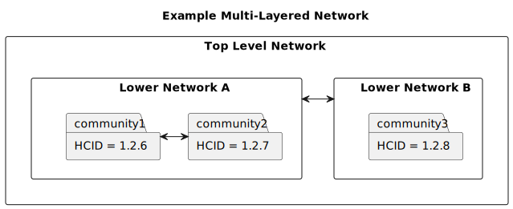
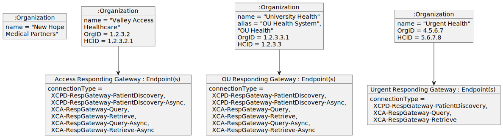
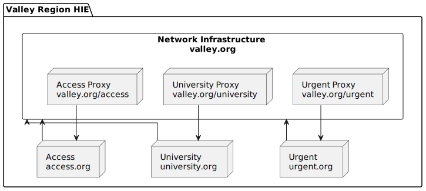

Integrating the Healthcare Enterprise

IHE IT Infrastructure (ITI) White Paper
Document Sharing Across Network Topologies
Revision 1.0. - Draft for Public Comment
Date: March 3, 2023
Author: ITI Technical Committee
Email: iti@ihe.net
Please verify you have the most recent version of this white paper. See here for the Published version and here for Public Comment versions.
Foreword
This is a white paper to the IHE IT Infrastructure Technical Framework. Each white paper undergoes a process of public comment and publication. IHE white papers are informative and are used to describe or investigate the need for normative publications.
Comments are invited and can be submitted using the IT Infrastructure Comment Form or by creating a GitHub Issue.
General information about IHE can be found at IHE.net.
Information about the IHE IT Infrastructure domain can be found at IHE Domains.
Information about the organization of IHE Technical Frameworks and Supplements and the process used to create them can be found at Profiles and IHE Process.
The current version of the IHE IT Infrastructure Technical Framework can be found at IT Infrastructure Technical Framework.
1 Introduction
As civilization becomes increasingly connected, it is becoming increasingly important and expected that all stakeholders in a health information ecosystem can access the information they need quickly, seamlessly, and without concern for jurisdictional, geographic, or organizational boundaries. To do so requires vast information exchange networks that span entire countries, or ideally, the world.
The Integrating the Healthcare Enterprise (IHE) standards profiling organization has previously published a Health Information Exchange (HIE) White Paper that gives an overview of the IHE integration profiles and policy decisions that should be considered when planning the architecture of a document sharing community. This white paper expands on the HIE White Paper by exploring strategies for integrating multiple document sharing communities into one federated exchange ecosystem with wide and comprehensive reach at the national or global level. Readers are expected to be familiar with the concepts and ideas presented in the HIE White Paper, as those concepts will be used and expanded upon here.
1.1 Scope
The scope of this white paper is to expand upon the ITI HIE White Paper by providing additional guidance on how existing document sharing communities can be interconnected to form a unified federated exchange ecosystem with wide and comprehensive reach. This white paper will assume that since existing networks are being connected, document sharing must be federated across the networks, but each network might use either a federated or centralized architecture internally. This white paper will not address any topics regarding the creation of a document sharing community or affinity domain. Readers interested in those topics are advised to look to the following existing IHE resources:
Note that this white paper is primarily intended for those wishing to combine existing document sharing networks or Health Information Exchanges. Readers interested in constructing a new standalone Health Information Exchange are advised to refer to the HIE White Paper.
When document sharing will be federated across networks, this white paper recommends the use of a centralized directory, likely operated by an entity not part of any of the networks, that collects and organizes the organizational and business information about all entities in all networks in the directory as well as the technical details needed to facilitate document sharing among them all. Examples will be based on the mCSD Profile, which offers the functionality needed by such a directory, and also offers a transaction that can be used to synchronize the central directory with directories operated by each network.
Networks should expose to each other standard interfaces that abstract away their underlying topologies to the greatest extent possible. Ideally, these would be the same standards based interfaces used to communicate between communities within networks, and this can be accomplished with thoughtful and consistent use of IHE's integration profiles. If this is done well, then understanding the design of the other network would not be necessary to facilitate communication.
That said, there are a few instances where members of one network might need to understand another network's layout in order to interpret the information they are receiving. The two cases this white paper will address are:
- Situations where information received from another network needs to be attributed to a particular organization that resides within that other network
- Situations where a message needs to be delivered to a particular recipient within another network
In both of these cases, the centralized directory will be used to correlate identifiers in document sharing messages with Organization Resources in the directory, such that a discrete association can be made programmatically.
In addressing these use cases, this white paper's scope is limited to the exchange of healthcare documents across networks. Document exchange provides a good baseline for healthcare data interoperability, as it simplifies exchange by grouping data into documents. Document sharing allows for the exchange of both structured data (for example, CDA or FHIR documents) as well as unstructured data (for example, scanned documents, PDF files, etc.). This makes document exchange a good choice for establishing baseline data exchange, whereas other forms of exchange, such as search and read of discrete FHIR resources via a RESTful API, are more advanced and can be added to an existing exchange ecosystem once baseline goals are met. As such, this white paper focuses only on document sharing, and does not address problems that might arise from other forms of data exchange.
1.2 Intended Audience
The intended audience of this white paper includes those involved in promoting, coordinating, architecting, or participating in federated exchange across existing health information sharing networks. This white paper covers high level data exchange philosophies and architectures, but does not cover implementation details. Such details can be found in the underlying IHE profiles leveraged here. Furthermore, the intended audience is assumed to have a strong understanding of document sharing communities and other topics covered in the ITI HIE White Paper.
Some intended audiences include:
- Those charged with enabling widespread healthcare data exchange
- Health Information Exchange Executives and Architects
- Health-IT Vendor Architects and Developers
- Standards Development Architects
- Academic Health Data Exchange Stakeholders
1.3 High Level Concepts
The following concepts and definitions will be used throughout this white paper.
1.3.1 Document Sharing Environment
Document Sharing Environment refers to any situation where two or more healthcare IT systems are exchanging health information in document format. Examples of document sharing environments include but are not limited to document sharing communities and document sharing networks.
1.3.2 Document Sharing Community
A Document Sharing Community is a group of facilities/enterprises that have agreed to work together using a common set of policies for the purpose of sharing health information within the community via an established mechanism.
Within each community, there exists a pair of gateways that are used to exchange data across community boundaries. The Initiating Gateway is used by members within a community to send messages to actors outside of the community. The Responding Gateway is the access point for actors outside of the community to access services within the community. These Actors are logically separate, but can be combined into a single system at the discretion of the implementer.
This pattern was established in the Cross-Community Patient Discovery (XCPD) and Cross-Community Access (XCA) Profiles, but can be applied to other environments as well.
1.3.3 Home Community ID
A Home Community ID (HCID) is defined by ITI TF-2 3.18.4.1.2.3.8 as a globally unique identifier for a community. Note that in the case where a community contains a single organization, a home community ID will also uniquely identify that organization, but in the general case where a community contains several organizations, the HCID will be distinctly different from individual organization identifiers.
1.3.4 Document Sharing Network
A Document Sharing Network is defined as a collection of one or more Document Sharing Communities and/or Document Sharing Networks that agree to a common, higher level governance structure, participate in document sharing with one another, and share network central resources, such as a central network directory, among one another.
Document Sharing Networks might provide their participant communities with a variety of services. The most common are centralized directories, certificate authorities, and centralized network gateways.
1.3.5 Network Gateway
A Network Gateway is a system, central to a given network, that facilitates data exchange across network boundaries. The Initiating Gateway is used by participants within a network to send messages to actors belonging to other networks. The Responding Gateway is the access point for actors belonging to other networks to access services within the network.
Network Gateways expose the same interfaces and are interacted with in the same way as community gateways. The difference is that a Network Gateway might provide access to several communities. Therefore, where network gateways are used, participants can interact with the network gateway in the same way as a community gateway, with the caveat that the network gateway might process information for several Home Community IDs.
The Initiating and Responding Gateway Actors are used by IHE in a variety of cross community integration profiles, including XCPD, XCA, and XCDR.
These concepts are explained further in Section 3.3 of the HIE White Paper.
1.3.6 Proxy
A Proxy in the context of document sharing is similar to a network gateway in that it brokers access across network boundaries. However, it is different in that a Proxy has no internal business logic - it exists solely to broker trust across the network boundary, and possibly provide translation services.
For example, suppose network 1 exists and is running smoothly, with trust between nodes being managed by a Certificate Authority internal to the network. However, that network then wants to join a higher level network, network 2, so its participants get access to the participants of the higher level, and vice versa. In order to ease the burden of federating trust across the multiple networks, network 1 might introduce a proxy into its infrastructure. That proxy would trust, and be trusted by, the members of network 1, and also the other members of the higher level network 2. The proxy would simply forward requests and responses in both directions across the network boundary, accessing network 1 on behalf of network 2, and network 2 on behalf of network 1.
A proxy need not be represented in a directory, because systems on the network will not necessarily be aware of its existence. From their perspective, they are talking directly to the system behind the proxy.
1.3.7 Central Network Directory
Systems in a network require a method for discovering one another. For large networks, manual configuration is not feasible, so discovery needs to be automated. Discovery can be facilitated by the addition of a central network directory into a network.
A central network directory is a care services directory that is central to the network and thus does not have bias toward one segment of the network or another. Note that for the purpose of this white paper, it matters only that there is a logical central network directory. That is to say, there might be a number of systems responsible for organizing, maintaining, and distributing the directory, but it can be thought of as logically a single cohesive whole.
In a multi-layered document sharing network, central directories for different layers of the network are likely to synchronize partially or entirely with one another in order to provide other layers of the network visibility into the Organizations present outside of their immediate network.
1.3.8 Multi-Layered Document Sharing Network
A Multi-Layered Document Sharing Network is a document sharing network that contains other document sharing networks as members. That is to say, such a network is a "network of networks".
For the sake of clarity, this white paper will refer to the most atomic actors in a multi-layered network as the "bottom" layers, and the least atomic actors as the "top" layers.

Figure 1.3.8-1: Simple View of a Multi-Layered Network
1.3.9 Document Sharing Federation
Document Sharing Federation refers to the act of architecting a document sharing network such that members within the network exchange healthcare documents directly with each other rather than through a central actor. Since there is no central actor that drives exchange, the network members are forming a federation with one another, resulting in the emergence of the document sharing network.
In contrast, a centralized network has one or more central actors that act as an information repository, and other members communicate directly only with the central actors.
Federation can occur at any layer of a multi-layered document sharing network, though it becomes more likely as higher and higher layers are added, because centralization becomes cumbersome as the network depth increases.
1.3.10 Care Services Directory
A Care Services Directory is a common, authoritative registry of the healthcare organizations, locations, practitioners, etc. and their contact information (both electronic and otherwise). A document sharing network, at minimum, needs a directory that contains the set of organizations that are members of the network and the communication endpoints for document sharing. More advanced networks will also want to have information about the network topology in the directory, as well as information about the healthcare locations, practitioners, jurisdictions, services, and organizational business relationships. Such a directory is likely to serve as a central network directory for a network.
IHE offers the Mobile Care Services Directory (mCSD) Profile to specify how such a directory should operate, and the mCSD White Paper offers additional explanation on how the mCSD Profile can be implemented to solve the business needs of a healthcare information exchange.
1.3.11 Patient Identity Management/Linking
In order to successfully and safely exchange patient health information within and across document sharing communities and networks, it is imperative that the parties doing the exchange are able to establish agreement about the patient that is the subject of their communication.
The concepts and profiles discussed in Section 5 of the HIE White Paper can be successfully applied across communities and networks. An important note is that in cases where interaction with network gateways that represent multiple communities is needed, only the XCPD Profile currently offers the functionality needed to give systems outside of the network access to patient identities for each community within the network. Other IHE profiles, such as the PDQ family of profiles, do not allow distinguishing between different identities across different communities, and so would only be sufficient when interacting with gateways that represent a single community or offer the facade of a single community.
1.3.12 Query and Retrieve
Document Query and Retrieve refers to a document sharing model where documents are exchanged in a two step process. In the first step, the document consumer actor sends a request for a list of available documents. In the second step, the document consumer actor reviews the obtained list of documents and retrieves certain documents from the list.
This model is often referred to as the "pull" model. It is generally used in situations where the actors consuming the document need to be able to search and retrieve information about a patient. This is most often the case for end user stories that involve reviewing the medical history, or current medical chart, for the patient.
This concept is further explained in Section 3.2 of the HIE White Paper. Document Query and Retrieve is enabled by the XCA Profile in a network setting, but can also be enabled by the MHD Profile.
1.3.13 Push Model
Push Model or simply "push" refers to a document sharing model where an information source wants to communicate healthcare information to a particular intended recipient. In this model, documents are prepared by the source and then need to be communicated and routed to a recipient that consumes them directly.
This model can be thought of as a direct replacement for email, fax, postal mail, etc. and is often referred to as a "push" model. This model is further explained in Section 3.1 of the HIE White Paper.
Push is enabled by the Cross-Enterprise Document Reliable Interchange (XDR), Mobile Access to Health Documents (MHD), and Cross-Community Document Reliable Interchange (XCDR Profiles.
1.3.14 Facade Community
Rather than expose internal networks and communities directly, a network could be designed to expose a single facade community to other networks with which it is interconnected. Such a community would have a single Home Community ID, different from those of the internal communities. The network gateways would therefore be responsible for combining information from all of the systems within, in order to appear as a single cohesive community to the outside.
A network offering a facade community must be able to act as a single community for all interactions. It must maintain a patient identity cross reference manager, so that patient identities across the internal communities can be combined into a single patient identity in the facade community. When it receives a document list query, it must be able to forward that query to all communities that are part of the facade, and combine the responses into a single unified response. When it receives a message for delivery, it must be able to route the message to the appropriate community without using a home community id.
The advantages of such an architecture is that it offers a simplified mechanism for interacting with the network for systems outside of the network, at the cost of complicating the network architecture.
1.4 Community vs Network vs Multi-Layered Network
The concepts of Community, Network, and Multi-Layered Network are very similar in concept, so it is important to distinguish how those terms are used here.
A community is distinguished as an entity that provides infrastructure to allow access to healthcare data internally, and provide internal systems access to external communities. A community is always assigned a Home Community ID that can be used to address the community in document sharing.
A document sharing network is distinguished as a group of entities with shared governance that agree on data sharing policies and technologies. A network will typically have some amount of central infrastructure. Common central components might include a Certificate Authority for facilitating authentication between network members, a central directory for facilitating network membership discovery, and initiating and responding gateways for federating exchange inside and outside of the network. A community inherently meets this definition, so all communities are networks, but not all networks are communities. A network might not be assigned its own Home Community ID in the case where it does not provide any services that require addressing the network as a whole.
Consider a network that consists of two separate communities. The network might contain initiating and responding gateways, but if the network delegates patient matching to both communities, and forces other requests to address a single one of the communities, it would not typically be seen as its own community.
A multi-layered-network is simply a network that contains other networks within. A multi-layered network is itself a general network, but is distinguished by the fact that it consists of policy agreements and communication infrastructure to facilitate communication across different entities that themselves can operate independently as networks.

Figure 1.4-1: Comparison of Community, Network, and Multi-Layer Network
1.5 A Note On Hierarchical Representation
This white paper considers only networks that have a hierarchical based layout. Each Organization connects "up" to Organizations that exist at a "higher" level in the network, meaning they serve a wider network scope, and "down" to Organizations that exist at a "lower" level in the network, meaning they server a more narrow scope. This is the architecture seen most commonly in exchange communities today, and is the natural result of connecting existing networks together into a multi-layered network.
This does not mean that there is a strict hierarchy. Single Organizations or Networks might choose to become members of multiple higher networks, resulting in the potential for multiple paths to a given organization. However, the design is still "hierarchical" in that each of the higher Organizations is seen as providing resources for the single member Organization.
With that having been said, the purpose of this white paper is to demonstrate how such a multi-layered network would be represented in a directory, and so it takes the perspective of a system examining the directory to locate a route. Nothing precludes a network from internally being architected using any architecture, be it star, mesh, ring, etc. Such a network would still present an interface to the outside world, and thus the Organizations within that network can be seen as children of the network.
2 Federation Use Cases
2.1 Document Access
2.1.1 User Story
In the Document Access use case, a user with a legitimate need to access healthcare information, such as a member of a patient's treatment team, wants to discover all available healthcare information for a patient and review information that they find most pertinent. Consider the following scenario:
Dr. Suwati is a primary care physician that works for New Hope Medical Partners. Her new patient, Vanna Patterson, recently moved to the area from across the country. Before moving, Vanna had been undergoing cancer treatment for about 9 months at several healthcare organizations. Since she lived in a rural town, her old primary care physician worked for a small community health center - Valley Access Healthcare. Meanwhile, she received her specialty oncology care from a larger, academic health system - University Health. To complicate matters, University Health had completed a re-branding 4 month's prior, right in the middle of Vanna's treatment, which means any healthcare summary documents generated prior will have the organization's old name. While they are different healthcare organizations, Valley Access Healthcare and University Health do belong to the same regional HIE.
Dr. Suwati will be taking over as Vanna's new primary care physician, and wants to understand the history and progression of Vanna's disease and the treatment she has undergone thus far. Dr. Suwati has listened to Vanna recount the care she has received, and now Dr. Suwati would like to review her medical records to gain clarity from the physician point of view. While recounting her medical journey, Vanna described most of the care she received in the context of the organization where she received it, and Dr. Suwati would like to be able to correlate Vanna's story with her medical record.
Dr. Suwati requests her EHR to find all available medical records for Vanna using Vanna's patient demographics. The EHR searches other communities for patients with Vanna's demographics and, once matching patients are found, queries for the documents that make up Vanna's chart. Fortunately, Dr. Suwati was able to find Vanna's medical records at Valley Access Healthcare and University Health. However, she also finds that additional records were found at Urgent Health. Those documents mentioned that Vanna had had a severe reaction to some medication she had been prescribed, such that Vanna should not be prescribed that medication again. Vanna hadn't mentioned that she was seen at Urgent Health, so Dr. Suwati is grateful that the records were located automatically. In order to help organize the documents, Dr. Suwati requests her EHR to sort the documents by date and group by source healthcare organization. Dr. Suwati is not concerned with University Health's recent rebranding, she wants to see all of the documents available from that organization throughout history to gain an overview of Vanna's specialty care.
To meet Dr. Suwati's needs, the EHR needs to be able to programmatically broadcast a set of patient discovery requests to other communities, evaluate the responses and follow-up with queries for medical documents, and then correlate the medical documents by discrete Organization. In order to respond quickly enough for Dr. Suwati's busy schedule, all of this needs to happen efficiently, and without actually retrieving or parsing the contents of all of the documents that were found.
2.1.2 Interoperability Challenge
For the purpose of this illustration, let's assume that the following infrastructure in place:
- New Hope Medical Partners is a participant of a network called "Big Health Exchange"
- Valley Access Healthcare, University Health, and Urgent Health are participants in a network called "Valley Region HIE"
- Both Big Health Exchange and Valley Region HIE are further members of a nationwide document sharing network to facilitate document sharing between members of both exchanges.
- All three networks are built using IHE document sharing integration profiles, particularly XCPD and XCA.
Dr. Suwati's goal is to request records from Valley Access Healthcare and University health. In order for her to instruct her EMR to request records for those organizations, the EMR needs to know not only that they exist, but how to communicate with them.
Problem 1
How can an EMR discover the existence of outside organizations it does not have a direct trust relationship with? How can a route to request information from that organization be discovered?
Assuming a solution to Problem 1 is available, then the EMR will have identified a community from which the patient's record can be requested, and a set of communication endpoints that can be used to reach that community. In order to communicate the patient for which records are requested, the patient's identity within that community must first be determined. The XCPD integration profile is used to accomplish that goal.
For the purpose of this illustration, assume that Valley Region HIE is structured as a single community with a single patient identifier domain, and Valley Region HIE's XCPD Initiating Gateway is reachable via Big Health Exchange's Responding Gateway, which will broadcast patient discovery requests to all communities it can reach. So, Dr. Suwati can determine Vanna's identity in Valley Region HIE by simply sending an XCPD request to Big Health Exchange's Responding Gateway.
Once the appropriate responding community and patient identifier for that community is determined, healthcare documents can be requested via the XCA integration profile. The XCPD response will have included a patient identity and Home Community ID pair for Vanna's Valley Region HIE record. So, the XCA integration profile can be used to request the healthcare documents available for Vanna from Valley Region HIE.
Once the data is retrieved, one problem remains, though - in order to enable filtering and sorting functionality to improve Dr. Suwati's efficiency, the EMR should be able to discretely associate each available document with the healthcare provider organization that authored it.
Problem 2
How can Dr. Suwati's EMR discretely correlate the received documents by authoring organization? How can they be associated with the list of organizations in the organization directory that Dr. Suwati has access to?
2.2 Push
2.2.1 User Story
In the Push use case, a user has a message that they want to convey to a particular recipient in another, potentially far away, community. The destination recipient might be an individual, a department at a healthcare organization, or other such addressable entity. The user might have a particular recipient in mind for which they need to discover connectivity, or they might need to be able to discover available recipients. Consider the following scenario:
Dr. Suwati has a patient, Leon Sanford, that has a rare neurological disorder that Dr. Suwati is unfamiliar with. However, Dr. Suwati knows that University Health, on the other side of the country, has a strong reputation for treating patients with this disorder. Dr. Suwati wants to refer Leon to a neurologist at University Health for evaluation. She needs to use her EHR to search the central network directory for a list of providers that offer neurological services at University Health, and are currently accepting new patients. She reviews the list of providers with Leon and together they determine that Dr. Santos is the best fit for Leon.
Dr. Suwati prepares a referral order and a letter in which she details her treatment of Leon thus far and the concerns she has for Dr. Santos to review. Dr. Suwati requests her EHR to send the referral, the letter, and a summary of care document to Dr. Santos at University Health.
University health is located in another document sharing community, but there is a communication path between New Hope Medical Partners and University Health. The EHR needs to be able to send a message that will be received by the community to which University Health is a member and confirm that the message was delivered to Dr. Santos at University Health.
2.2.2 Interoperability Challenge
The IHE XDR integration profile enables the sending of an unsolicited message from a source to a destination, and the IHE XCDR integration profile supplement allows for routing via Home Community ID. So, if Dr. Suwati's EMR can construct a message and send it to an XCDR initiating gateway that has access to University Health, then the XCDR initiating gateway can route the message to that organization. However, before that can happen, the EMR must be able to determine that Dr. Santos is a physician that cares for patients at University Health, and that University Health is reachable via the network. This problem is very similar to Problem 1 above.
Problem 3
How can an EMR discover the message transmission route to send a message to a recipient at an outside organization which which it does not have a direct trust relationship?
If Problem 3 were to be solved, then the EMR would know that by sending an XDR message with the Transmits Home Community ID option to the Big Health Exchange initiating gateway, it can ensure that the message is routed to the Valley Region HIE. But that is not sufficient for Dr. Santos to receive it, the message needs to be further routed to his incoming mail box at University Health. This is the final problem this white paper seeks to address:
Problem 4
How can a pushed message be addressed to an individual or organization within a community?
As will be illustrated below, the use of a centralized directory to represent the network topology is one solution to greatly facilitate the solution to these problems.
3 Example Network Topologies
This white paper does not specify or endorse any particular network topology. Instead, it recommends the use of standard exchange interfaces at the network gateway level, so that when networks must be interconnected, they can be regardless of topology. What follows are possible example network topologies:
3.1 Single Organization Community
It is possible for a singleton organization to form a community by itself, and for that community to interface directly with other networks.
The community might be architected as an XDS Affinity Domain or some other architecture. More information is available in Section 3.2.3 of the HIE White Paper.
Figure 3.1-1: Single Organization Community Layout
3.2 Multi-Organization Community
Multiple organizations can also join together into a community. In this case, querying the community responding gateway will return results for data produced by both organizations.
The below example shows one such topology, where two organizations have chosen to belong to the same XDS Affinity Domain and therefore share the same XDS infrastructure.
Figure 3.2-1: Multi-Organization Community Layout
3.3 Single Facade Community
A community might have a fairly complex architecture internally. It might even be composed of many organizations that exchange data using proprietary mechanisms. However, if the community exposes gateways that are able to abstract away the internal complexities and expose data in the form of documents, then it can successfully act as a node in a multi-layered document sharing network.
In this example, a community is made up of three organizations that exchange data using proprietary methods. The Responding Gateway includes functionality to access this data and generates documents on-demand that can be shared with others in the network. As such, the interface exposed is the same as the single affinity domain case, even though the internal architecture is quite different!

Figure 3.3-1: Single Facade Community Layout
3.4 Multiple Community Network
Multiple communities can be joined together to form a network of communities. The network infrastructure can offer initiating and responding gateways that make the internals of the network accessible to other networks. This would allow other networks access to all communities in the network, but they would typically need to interact with one community at a time.
The XCPD integration profile provides a mechanism to query the network with patient demographics with the result being the list of community+patient identifier pairs that have data for the patient. Each community can be queried for data using the patient ID for that community via the network gateway. This is a bit more burdensome on consumers in other networks. If it is desired to interact with the network as if it were a single community, then architecting a facade community might be considered.
The following diagram shows an example of a multi-community network. The network contains three communities, the inner details of which are not shown:
Figure 3.4-1: Multi-Community Network Layout
3.5 Multi Layered Network
Similar to a multi-community network, multiple networks can be joined together to form larger, interconnected networks. Similar to multi-community networks, actors external to a multi-layered network can broadcast a patient query into the network and get back a patient identifier for each community within. The patient identifiers can then be used to query for documents.
By layering networks in this way, the interconnection of different networks can be accomplished in a way that provides a consistent interface for actors both within and outside of each network.
Figure 3.5-1: Multi-Layered Network Layout
4 Directory Structure
This section provides guidance on how the above community topologies might be represented in a central network directory.
4.1 Purpose-Built vs. Comprehensive Directories
Many Endpoint directories that are in production at the time of this writing are purpose-built, which is to say they only store information about organization, location, and endpoint information. The sole use case of these directories is endpoint lookup, and for this reason, directories often reflect network details directly in the Organization resource, such as:
- The organization's role in the network, like participant or sub-participant, expressed as the type of organization
- The organization's relationship to its connectivity parent, expressed as the organization hierarchy (i.e., Organization.partOf in FHIR)
- The organization's connectivity state
- Supported communication profiles, purposes of use, etc.
- A single type of organizational identifier, most commonly used as the Home Community ID for IHE cross community integration profiles
The purpose-built nature of these directories makes representation of other organizational hierarchies, such as business relationships and jurisdictional governance, challenging. This is because business, jurisdictional, and technical system relationships tend to have organizational hierarchies that do not match one another. A directory purpose-built for electronic endpoint exchange tends to prioritize technical system relationships in hierarchical representations, which means that other types of hierarchical relationships are not represented properly. This is a significant drawback, as electronic communication information becomes more useful when paired with information that non-technical end users might find relevant.
For example, suppose a clinician works for a staffing organization that contracts out services to several healthcare provider organizations, and that clinician has a specific electronic delivery address for each healthcare provider organization. An individual trying to message that clinician about one of their patients would need to understand this well enough to choose the correct delivery address to send the message to the correct provider organization. At the same time, a public health worker might want to be able to quickly identify and message all of the infection disease experts in their government jurisdiction to alert them of a new disease outbreak. As expectations of connectedness and automation grow, we predict that it will be necessary to have an increasing amount of information available in a single, centralized directory. This means that it will be necessary to represent multiple disparate systemic hierarchies in a single directory.
The IHE mCSD Integration Profile is well suited to address this problem by utilizing the OrganizationAffiliation resource to provide for the representation of multiple organizational hierarchies, and by also considering how the Practitioner and PractitionerRole resources can be integrated into such a directory. This allows for data about healthcare facilities, care services, healthcare workers, and other healthcare entities to all exist in a central location along with their communication details.
4.2 Directory Layout Guidance
In this section, we provide guidance on how to represent the example communities introduced in Section 3 in a central network directory. This guidance will be focused on a central network directory that uses the HL7 FHIR Organization, OrganizationAffiliation, Location, and Endpoint resources to store directory information. The guidance is meant to be compatible with the mCSD Integration Profile, so that it can live in a directory that has other hierarchical relationships without conflict.
4.2.1 FHIR Resources Used For Communication Information
The first question that is asked when document sharing is "what are the parties to the exchange?" This question implies the use of the Organization Resource to model the entities exchanging data. HL7 FHIR defines an Organization as a group of people or organizations that form some collective of action, such as companies, institutions, corporations, departments, community groups, healthcare practice groups, healthcare payers, etc. Organizations often exist in one or more hierarchies, where those hierarchies might represent business entity relationships, jurisdictional relationships, IT relationships, etc. Organizations have a few key attributes that are relevant for Document Sharing:
- A logical Identifier that uniquely identifies the Organization as an entity
- The Name by which a human user would know of the organization
- Telecommunication identifiers that can be used to reach the Organization
- Information about what larger Organization the Organization might be part of
- One or more endpoints for electronic communication and data exchange
As stated above, an Organization might belong to a variety of hierarchies for different purposes. While the Organization Resource can only refer to one parent Organization directly, the OrganizationAffiliation Resource can be used to establish additional hierarchies. The partOf element is typically used to represent business relationships (Department X is part of Organization Y which is a subsidiary of Organization Z), however, some directories might choose to use partOf to also represent document sharing access. The OrganizationAffiliation Resource establishes a parent-child relationship via its organization (parent) and participatingOrganization (child) elements. It also has a code element that can be used to identify the nature of the relationship between organization and participatingOrganization. mCSD defines a code - DocShare-federate - to imply that a parent organization provides access to documents for its children in a Document Sharing Network. Additional codes might be defined by mCSD in the future or by directory policy. OrganizationAffiliation also has an endpoint element. This can be used instead of Organization.Endpoint when it needs to be clear that while the Endpoint is child Organization specific, it is relevant only in the context of the OrganizationAffiliation, rather than in general. This understanding is necessary in comprehensive directories where access to the endpoint is predicated on having a relationship with the parent organization. This is often the case for endpoints available on the public internet, since document sharing endpoints generally cannot allow access to unauthenticated or unauthorized users. In this scenario, the OrganizationAffiliation would have .organization pointing to an HIE Organization that establishes strong rules for governance and provides credentials to each member to access the other members' endpoints.
The third Resource that is critical to establishing connectivity is the Endpoint resource. An Organization can have one or more Endpoints to represent an access point for electronic communication with that Organization. Endpoints have a connectionType that define the type of communication enabled by that endpoint. For IHE Document Sharing profiles, mCSD defines an extension - Endpoint Specific Type - to help clarify more information that is needed about the types of messages that the Endpoint can process. An Organization is likely to point to multiple Endpoint resources - one for each connectionType/specific type that the organization is able to accommodate. Endpoints have an address that contains the technical address to which communication should be directed (most often an HTTPS URL). Endpoints are pointed at by their respective Organizations, but they also have a managingOrganization element that can be used to identify the Organization that manages (provides support) for the endpoint. While the managingOrganization is often in directories and is important for operational support, it generally will not be directly used in Document Sharing since it does not represent a relationship relevant for data access.
Location Resources describe a physical place where services are provided. They are similar to Organization in that they have logical identifiers, names, telecom information, a hierarchy, and electronic data exchange Endpoints. However, since they represent a physical place, rather than the actual entity that might provide services or maintain IT infrastructure, they are typically not used in Document Sharing outside of facilitating discovery of the Organization that a user desires to share with.
Finally, the Practitioner and PractitionerRole Resources provide information about individual Practitioners that practice at an Organization. They are relevant to DocumentSharing in that they will commonly be referenced in documents and their metadata, but they are also relevant for push use cases in the event a message needs to be delivered to an individual.
Directory policy will dictate the relationships between these Resources in the directory. A key decision that needs to be made is the primary hierarchy of the directory, i.e. what Organization.partOf represents. If the directory is comprehensive, it will need to represent multiple hierarchies, and so all but one will need to be represented using OrganizationAffiliation Resources rather than Organization.partOf relationships. The value set of OrganizationAffiliation.code will also be critically determined by the directory policy, since consumers of the directory will need to know how to interpret each hierarchy. When deciding how Organization, Endpoint, and OrganizationAffiliation Resources should be layed out in the directory, the trust policy of the network and the perspective of actors in the directory should be considered. Nodes in the network will need to be able to determine which endpoints are reachable by them from both an IP networking and a trust perspective. Careful planning of the directory structure can facilitate the programmatic discovery of electronically reachable Organizations.
4.2.2 Indicating Document Sharing Connectivity
As stated previously, document sharing relationships might be expressed in the directory via Organization.partOf or by use of the OrganizationAffiliation Resource.
Organization.partOf is the simplest way to represent a relationship between two Organizations. When child organizations have a partOf relationship with a parent, there is ambiguity around whether requesting data from, or delivering messages to, the parent organization will return data from, or route the message to, the child organizations. Therefore, this relationship is only feasible in purpose built directories where it is obvious what the .partOf relationships convey, and the future growth opportunities for such a directory are limited. Conversely, a more explicit and future proof alternative is to use the OrganizationAffiliation resource to convey what document sharing access is possible.
Because the use of partOf is not explicit in whether it signifies that a parent Organization provides document sharing access to its children, directory policy will need to clarify the meaning of partOf with respect to Document Sharing. Directory policy that declares organizational hierarchy via partOf implies accessibility to child entries, meaning:
- For FHIR REST endpoints, the URL is simply the Service Base URL as specified in FHIR R4 3.1.0.1.2. Clients can expect to find resources related to Organizations A, B and C.
- For XCA endpoints, a client querying Organization A for documents (e.g., using [ITI-38]) may receive documents from Organizations A, B and C.
- For XDR endpoints, a client sending a Provide and Register Document Set-b ([ITI-41]) request to Organization A can optionally specify Organizations B and/or C in intendedRecipient.
- For MHD endpoints, a client sending a Provide Document Bundle ([ITI-65]) request to Organization A can optionally specify Organizations B and/or C in intendedRecipient.
Examples of this kind of federated structure are shown in ITI TF-1: Appendix E.9 for XCA Responding Gateways.
Possible declarations of partOf relationships could include:
- Declaring that partOf shall be used to signify a Document Sharing relationship rather than or in addition to business relationships. In this case, OrganizationAffiliation might not be used, but this case is also the most restrictive and least capable of conveying hierarchical nuance.
- Declaring that partOf may indicate that the parent provides Document Sharing Access, but only if the child Organization in question has no Endpoints of its own and no OrganizationAffiliation resources with it as a participatingOrganization and a code indicating document sharing access.
- Declaring that partOf has no relationship to document sharing and any organizations that provide document sharing access to children must be linked to the children with an OrganizationAffiliation with an appropriate code. This is the most explicit policy, but one that might be operationally cumbersome to maintain.
In all three cases, the Endpoint Discovery Algorithm later in this section will identify an endpoint if one exists. However, the endpoint discovery algorithm will require further configuration to align the notion of a "suitable" endpoint with directory policy. For example, if the directory policy declares that Organization.partOf shall not be used to convey document sharing relationships, then the Endpoint Discovery Algorithm should be configured to not traverse those relationships.
In the examples that follow, the OrganizationAffiliation Resource is used to convey document sharing connectivity information due to its increased versatility. In this white paper, the following value set will be used:
- PartnerConnectivity - this code is used to indicate that the .participatingOrganization should be able to reach the .organization directly via .Endpoint. This code does not make any claims about the connectivity available for any organizations other than the two directly linked to the OrganizationAffiliation Resource. Note that many document sharing networks might choose to distribute the information needed to establish these connections out of band rather than via the directory.
- HIEInitiator - This code is used to indicate that the Organization linked in .participatingOrganization is a member of the network headed by the Organization in .organization, and it has permission and intent to request data from other members of the network. In this case, OrganizationAffiliation.endpoint represents the endpoint used by the .participatingOrganization to make requests of the Initiating Gateway under the authority of .organization.
- HIEResponder - This code is used to indicate that the Organization linked in .participatingOrganization is a member of the network headed by the Organization in .organization, and it has an Endpoint that accepts requests from other members of the network that have an HIEInitiator relationship with the network governing Organization. In this case, OrganizationAffiliation.endpoint contains endpoints used by other network members to send requests to .participatingOrganization. This Endpoint may also be used by Initiating and Responding gateways operated by the .organization.
- DocShare-federate-int - This code indicates that documents from the .participatingOrganization are available to organizations within the network by communicating with the network Initiating Gateway operated by .organization. In this context, "within the network" means organizations that have an HIEInitiator relationship with the .organization. This code is similar to the DocShare-federate code in mCSD, but is limited in scope to Organizations internal to the network.
- DocShare-federate-ext - This code indicates that documents from the .participatingOrganization are available to organizations outside of the network by communicating with the network Responding Gateway operated by .organization. In this context, "outside the network" means organizations that do not have a child relationship with the .organization, but do have upper level network or peer connectivity with that Organization. This code is similar to the DocShare-federate code in mCSD, but is limited in scope to Organizations external to the network.
- Other codes are used to indicate relationships irrelevant to document sharing access.
4.2.3 Example Community Directory Layouts
4.2.3.1 Representation of a single Organization's Endpoint in a directory
In a Single Organization Community, the Community can be represented as a single Organization resource with an Organization identifier and a Home Community ID, and these identifiers might even be the same. Since the Community's Responding Gateway serves a single Organization, Endpoints for each service provided by the Responding Gateway can be tied directly to the Organization resource, using the Organization.endpoint element.
An Organization might manage its own Endpoint. This results the the simplest case shown below:
Figure 4.2.3.1-1: Organization-specific Endpoint Hosted by the Organization
Suppose instead Organization A is a subsidiary of its parent, B. B provides IT services and support to its subsidiaries, but each subsidiary has a unique document sharing endpoint that behaves identically to if it had hosted its own endpoint. The Endpoint is pointed at by Organization A to communicate that the Endpoint is logically "owned by" A, while it points to B as the managingOrganization to indicate that B is providing technical support for the endpoint:

Figure 4.2.3.1-2: Organization-specific Endpoint Hosted by Parent
Suppose a similar relationship between organizations C and D, but where D is not a parent organization to C, rather it is a third party affiliate that provides IT services and support. In that case, the OrganizationAffiliation Resource might be used to convey the relationship rather than Organization.partOf:
Figure 4.2.3.1-3: Organization-specific Endpoint Hosted by Affiliation
Another similar relationship between E and F might exist, but E handles network support for its own endpoint. In that case, E is still the managing organization, and F need not be represented in the directory at all:

Figure 4.2.3.1-4: Organization-specific Endpoint Hosted by Unrepresented Intermediary
4.2.3.2 Organizations with Multiple Endpoints
A single Organization might have multiple Endpoints for different purposes. For example, endpoints might be needed for IHE XCPD, XCA, XCDR, and a FHIR endpoint to accommodate PDQm and MHD transactions.
Figure 4.2.3.2-1: Multiple Endpoints per Organization
This example does not specify the specificType extension for the RESTful FHIR endpoint because the needed information can be retrieved by retrieving the Organization's CapabilityStatement. However, one might choose to publish a list of supported FHIR profiles on the FHIR endpoint so that that information is available in the directory.
4.2.3.3 Representing Network Membership and Connectivity
Suppose Organization H is the governing organization for a Health Information Exchange Network, in which G is a member. Organization G hosts its own document sharing endpoint for access to its healthcare data by other members of H.
We will represent this situation by using an
OrganizationAffiliation resource with a code of
"HIEResponder" to indicate this fact to other members in the
directory.
If the endpoint were to be pointed to by the Organization H
resource, it is not clear that data for H would not be
returned by that endpoint, and H might have multiple
affiliated organizations for which it needs to provide
endpoints. Pointing at G's endpoint from G's Organization
resource is more aligned with what is commonly done today,
but would only work unambiguously if the directory is
purpose built such that it is assumed that all endpoints are
accessible to members of H. However, if G needs multiple
endpoints to support different affiliated organizations that
provide access to it, then it would be challenging to
differentiate the different endpoints attached to G. In this
example, OrganizationAffiliation allows the Endpoint to be
declared specific to G while still making it clear that it
is accessible by Initiators on H's network.
Figure 4.2.3.3-1: Organization-specific Endpoint With Access Provided By Affiliation
Note that in this case, while the endpoint is specific to G, it is hosted by H as indicated by the managingOrganization link. However, since a client does not care that H manages the endpoint, only that it is used to access G and that members of H are authorized to use it. A client would not generally use the .managingOrganization link for functional purposes, except to provide information to end users in the event IT assistance is needed from H. This is an example of a case where H is acting as a proxy.
4.2.3.4 Multiple Paths to an Organization
An organization might be a member of, and reachable by, multiple networks. If each network exposes an Organization specific endpoint to the Organization, then they must list those endpoints on the OrganizationAffiliation Resource. Since each OrganizationAffiliation resource points to the appropriate network in .organization, it is clear to clients what credentials are needed for each endpoint.

Figure 4.2.3.4-1: Organization-specific Endpoints From Multiple Affiliations
4.2.3.5 Endpoint to a Complex Organization
If an Organization A has a number of sub-organizations that generally do not act independently and share an IT system, such as is the case with departments, then the simplicity of .partOf might be beneficial instead of using OrganizationAffiliation.
Consider the following diagram, where Organization A has two departments, modeled as Organization AA and Organization AB:
Figure 4.2.3.5-1: Endpoint to Parent Organization
The following shows the same Organization hierarchy, but using OrganizationAffiliation instead of partOf to declare the relationship. This might be more appropriate where Organizations AA and AB are subsidiaries that have some independent capabilities apart from Organization A, but still share IT resources. Here, the DocShare-federate codes are used to indicate that requesting data from Organization A will return data for Organization AA and AB:

Figure 4.2.3.5-2: Endpoint to Parent Organization with OrganizationAffiliation
4.2.3.6 Importance of Policy Specifying the Meaning of OrganizationAffiliation.code
Directories that will have Organizations with partOf relationships where both Organizations have endpoints should have a way to distinguish whether the parent endpoint provides access to data from the child. Since OrganizationAffiliation might be used to represent several kinds of hierarchies, directory policy will dictate when OrganizationAffiliation implies document sharing access. OrganizationAffiliation and partOf might be used to indicate relationships outside of document sharing access according to directory policy, or directory policy might forbid that.
Suppose a directory policy stated that parent Organizations provide access to child organizations only when linked by an OrganizationAffiliation Resource where OrganizationAffiliation.code=DocShare-federate-int. In such a directory, the below relationship would not imply document sharing federation:

Figure 4.2.3.6-1: Endpoints to Both Parent and Child Organizations
If Organization A did provide document sharing access to Organization AA, then an explicit OrganizationAffiliation with code=DocShare-federate-int would be declared:
Figure 4.2.3.6-2: Endpoints to Both Parent and Child Organizations with OrganizationAffiliation
In a multi-layered network, it is likely that different solutions will be used at different levels. Here, Organization J has three subsidiaries, Organizations JA, JB, and JC, as well as a document sharing affiliation with Organization I. Suppose the directory policy stated that document sharing access could be assumed when there was an OrganizationAffiliation relationship with OrganizationAffiliation.code=DocShare-federate-int or when Organization.partOf was the only path to a parent organization. Then, if Organization I's endpoint would provide document sharing access to all four organizations, it would be represented as so in the directory:
Figure 4.2.3.6-3: Endpoint to Multi-Layered Organizational Structure
4.2.4 Endpoint Discovery
One of the necessary goals of designing a directory structure should be to enable consumers to programmatically determine who they can communicate with and which communication endpoints they can use to do so. Following the example directory structure outlined above, the following pair of algorithms could be implemented by a Care Services Selective Consumer to navigate the directory. The first algorithm - the Network Access Endpoint Discovery Algorithm - is used to locate an endpoint that can be used to access a higher level network. The second algorithm - the Service Provider Endpoint Discovery Algorithm - is used to locate the endpoint that should be used to send a request to a given service provider in the directory. The Service Provider Endpoint Discovery Algorithm could be a primary algorithm for locating the endpoint that a client needs to use to accomplish sending a message, and it uses the Network Access Endpoint Discovery Algorithm internally to resolve that answer.
There are a few things to be noted about these algorithms. First, they use the term "suitable endpoint" to refer to an endpoint that has an appropriate type for the task at hand. Second, they assume the above example codes are used in the directory. Finally, these algorithms are for illustrative purposes only. They are not optimized, and they do not defend against programming hazards such as nonsensical data, infinite loops, etc. It is possible that with directory policies that constrain directory layout, these algorithms could be simplified.
4.2.4.1 Network Access Endpoint Discovery Algorithm
- Accept as input a Data Consuming Organization A and Network Entity Organization B
- Foreach OrganizationAffiliation hieAff where
hieAff.organization is B
- If hieAff.participatingOrganization is A and hieAff.code
contains "HIEInitiator"
- Foreach hieAff.endpoint E
- If E is a satisfactory Endpoint, the algorithm ends with E
- Foreach B.endpoint E
- If E is a satisfactory Endpoint, the algorithm ends with E
- Foreach hieAff.endpoint E
- If hieAff.participatingOrganization is A and hieAff.code
contains "HIEInitiator"
- Foreach OrganizationAffiliation intAff where
intAff.organization is B
- If intAff.code contains "HIEInitiator"
- Let C be intAff.participatingOrganization
- Run the Network Access Endpoint Discovery Algorithm for A and C
- If a result is returned, the algorithm ends with the returned value
- If intAff.code contains "HIEInitiator"
- If A.partOf is B
- Foreach B.endpoint E
- If E is a satisfactory Endpoint, the algorithm ends with E
- Foreach B.endpoint E
- The algorithm ends with a null result
4.2.4.2 Service Provider Endpoint Discovery Algorithm
- Accept as input a Data Consuming Organization A and Data Providing Organization B
- Foreach B.endpoint E
- If E is a satisfactory Endpoint, the algorithm ends with E
- Foreach OrganizationAffiliation orgAff where
orgAff.participatingOrganization is A, orgAff.organization
is B, and orgAff.code contains "PartnerConnectivity"
- Foreach orgAff.endpoint E
- If E is a satisfactory Endpoint, the algorithm ends with E
- Foreach orgAff.endpoint E
- Foreach OrganizationAffiliation orgAffDest where
orgAffDest.participatingOrganization is B
- Let H be orgAffDest.organization
- If orgAffDest.code contains "HIEResponder"
- Let E be a null Endpoint
- Foreach orgAffDest.endpoint F
- If F is a satisfactory Endpoint, let E be F
- If E is null
- Foreach H.endpoint F
- If F is a satisfactory Endpoint, let E be F
- Foreach H.endpoint F
- If E is not null
- Foreach OrganizationAffiliation orgAffHIE where
orgAffHIE.organization is H and orgAffHIE.code contains
"HIInitiator"
- Let C be orgAffHIE.participatingOrganization
- If C is A, the algorithm ends with E
- Else, run the Network Access Endpoint Discovery Algorithm for A and C. If the result is not null, the algorithm ends with the result.
- Foreach OrganizationAffiliation orgAffHIE where
orgAffHIE.organization is H and orgAffHIE.code contains
"HIInitiator"
- If orgAffDest.code contains "docShare-federate-ext"
- Run the Endpoint Discovery Algorithm for A and H. If a result is returned, the algorithm ends with the result.
- Let C be B.partOf
- If C is not null, return the result of the Endpoint Discovery Algorithm for A and C
- Return no result (null)
4.2.4.3 Endpoint Discovery Considerations
Rather than a first-match search, the Care Services Selective Consumer might search for and decide among multiple electronic paths to the same Organization. For example:
- It finds a suitable Endpoint resource for the target Organization, but instead uses an Endpoint for an Organization two levels higher to make a broader search for records.
- It finds suitable Endpoint resources for equivalent mechanisms, XDR [ITI-41] and MHD [ITI-65], and chooses MHD as the preferred transaction.
- It finds suitable Endpoint resources to the same Organization via two different HIEs, and prefers one HIE based on lower fees and authorization differences.
Community or Network governance may also choose to place restrictions on the directory layout to ensure that there will be only a single path to any given Organization in order to simplify deployment and operations.
4.2.5 Publishing a New Entry
When publishing a new entry, the goal is to ensure that the resulting data structures accurately reflect access in the directory from the perspective of the endpoint discovery algorithm.
- First, publish the new Organization resource, ensuring that it has a unique Organization.identifier if expected by directory policy
- If the Organization is a community and directory policy includes handling for Home Community IDs, ensure such an ID is also included in the Organization Resource.
- If the Organization has a parent that should be represented by .partOf per directory policy, set Organization.partOf as needed
- If the Organization is a part of a network and will be
entitled to initiate requests to other network members,
create an OrganizationAffiliation Resource where
- OrganizationAffiliation.participatingOrganization is the new Organization
- OrganizationAffiliation.organization is the Organization representing the network itself
- OrganizationAffiliation.code is "HIEInitiator"
- If the Organization should be allowed to initiate
requests to the network initiating gateway
- If no Endpoint Resource for the Initiating Gateway exists, create one
- OrganizationAffiliation.endpoint is the initiating gateway's endpoint
- If the Organization can respond to requests from other
network members
- Create a new Endpoint Resource for the Organization's endpoint
- Create a new OrganizationAffiliation Resource where
- OrganizationAffiliation.participatingOrganization is the new Organization
- OrganizationAffiliation.organization is the Organization representing the network itself
- OrganizationAffiliation.code is "HIEResponder"
- OrganizationAffiliation.endpoint is the Organization's endpoint
- If the network's Initiating Gateway can return data for
the new Organization in response to requests from other
network members
- Create a new OrganizationAffiliation Resource where
- OrganizationAffiliation.participatingOrganization is the new Organization
- OrganizationAffiliation.organization is the Organization representing the network itself
- OrganizationAffiliation.code is "DocShare-federate-int"
- Create a new OrganizationAffiliation Resource where
- If the network's Responding Gateway can return data for
the new Organization in response to requests from other
network external Organizations
- Create a new OrganizationAffiliation Resource where
- OrganizationAffiliation.participatingOrganization is the new Organization
- OrganizationAffiliation.organization is the Organization representing the network itself
- OrganizationAffiliation.code is "DocShare-federate-ext"
- Create a new OrganizationAffiliation Resource where
- Create additional OrganizationAffiliation Resources as needed
- Create other Resources that link to Organization as needed
4.2.6 Directory Perspective
An important consideration when layering multiple networks is how different entities in the network will perceive the network. Care needs to be taken to ensure that network directories at each level accurately reflect the set of endpoints reachable by those members. For example, consider the multi-layered network diagram:
Figure 4.2.6-1: Multi-Layered Network Layout
Here:
- The community with HCID 1.2.8 is a member of the Top Level Network
- The Lower Network A network is also a member of the Top Level Network
- The community with HCID 1.2.7 is a member of Lower Network A
- The community with HCID 1.2.6 is a member of Lower Network A
We will start at the top level and work our way down:
The Top Level Network has two direct members, A and B. These two members can communicate directly with each other by using the directory and trust policies provided by the Top Level Network. However, each network cannot directly access the lower organizations in the network - they must use the network gateways for that access. In contrast, in Lower Network A, Communities 1.2.6 and 1.2.7 can communicate directly with one another, but to reach Community 1.2.8, they would communicate via the Lower Network A gateways.
A combination of OrganizationAffiliation Resources would be used to complete this representation:
- An Organization at the top level represents the Upper Network. This Organization does not have any endpoints and does not directly facilitate exchange, but exists to represent the entity in charge of operating the upper network.
- The Lower Networks connect to the upper network via a pair of OrganizationAffiliation Resources. One OrganizationAffiliation Resource will have code="HIEResponder" and their upper network accessible endpoint to indicate that they will respond on the network. The other will have code "HIEInitiator" to indicate that they are a client on the upper network. Since both Organizations are both initiators and responders on upper network, they can access each other's endpoints.
- Within Lower Network A, four types of
OrganizationAffiliation Resources are used
- Those with code=DocShare-federate-ext indicate that Lower Network A's endpoint on the upper network provides access to documents from the two Organizations within. This would be used by Community 1.2.8 to access the Organizations in Lower Network A.
- Those with code=DocShare-federate-int indicate that Lower Network A's endpoint for its members provides access to documents from the Organizations within. In this case, since only Community 1.2.7 has this code, only Community 1.2.7's documents will be returned by Lower Network A's Initiating Gateway when queried from within the network.
- Those with code=HIEInitiator and HIEResponder act as they do on the upper network, but scoped to the lower network. In other words, they indicate that both members of Lower Network A can access each other's corresponding endpoints.
This would be represented in an mCSD Directory as follows:

Figure 4.2.6-2: Multi Level Directory Layout
4.2.7 Inclusion of Push Recipient Addresses
A common need in document sharing push workflows is to deliver a message to a specific intended recipient. That recipient might be an Organization, a Practitioner, or some other Person or Group. Since the intended recipient of a message is often far more specific than the set of entities served by an endpoint, delivering a message to an endpoint is insufficient for push workflows - the recipient also needs to be addressed so that the message can be routed to the intended recipient.
The IHE document sharing profiles capable of handling push messaging - XDR, XCDR, and MHD - contain a field for intendedRecipient that can be used for such an address. The appropriate value with which to populate intendedRecipient could be determined from the target recipient's entry in the mCSD directory. Note: For Practitioners, the PractitionerRole Resource would be the target resource since a Practitioner might have roles at several organizations, and it is important to deliver the message to the Practitioner at the Organization where the relevant patient care takes place. There are two elements, common across the FHIR resources that users would typically wish to address, that might be used for such a value:
- PractitionerRole, Location, and Organization Resources have endpoint elements. Endpoint.address can be any URI, so a URI could be constructed for each addressable resource, populated in intendedRecipient, and used by responding gateways for message routing.
- The above Resources, as well as the Person Resource, have a .telecom element. If these elements are populated with sufficiently unique values (for example, non-shared email addresses), then they could be used to populate intendedRecipient and used by responding gateways for message routing.
Additional profiling of the above Resources might specify a more standardized way of communicating intendedRecipient addresses in the future. In the absence of that profiling, determining how to populate intendedRecipient will be up to community and network policy. Networks that wish to enable the push model of exchange should ensure that whatever values they select can be used by responding gateways to the actual intended recipient.
In an environment where suitable intendedRecipient addresses can be determined, a Document Source (or delegated Initiating Gateway) would accomplish pushing to the recipient by doing the following:
- First, use the Endpoint Discovery Algorithm to find the most localized and suitable Endpoint for push messaging to the intended recipient's Organization.
- Then, compose a message with intendedRecipient populated according to community or network policy, and transmit that message to the discovered Endpoint.
4.2.8 Associating Documents With Directory Entries
A common need in document sharing is to attribute a received document to a healthcare organization or provider. This can be done discretely with the aid of a centralized directory. Both the authorInstitution and authorPerson document sharing metadata elements can contain a discrete identifier for the document's author. The corresponding mCSD directory entries will also have a .identifier element that discretely identifies them. Therefore, the authorInstitution and authorPerson document sharing metadata elements should be populated with identifiers from the corresponding directory entries to enable correlation.
Note that Organizational identifiers like Home Community ID or Repository Unique ID are often not unique to a particular Organization and so should not be relied upon to attribute documents to a particular Organization.
4.3 Example Directory Policies
Directory policy will dictate the structure of the directory. In this section, several candidate policies are outlined to illustrate what a policy might look like and the effect that it has on the directory.
4.3.1 Fully Comprehensive Directory
In a fully comprehensive directory, Organization relationships are declared explicitly wherever possible. This ensures that multiple use cases and hierarchies can be represented in the directory, and new use cases can be added in the future with minimal chance of conflicting with the existing directory layout. The examples presented in this white paper would be aligned with this type of policy.
This policy might look like the following:
- All Organizations known to users of the directory shall be published as Organization Resources
- The Organization that operates the directory shall be published as an Organization Resource
- The Organization that operates the top level network trust model shall be published as an Organization Resource
- Organization.partOf shall only be used when the child Organization is a legal subsidiary of the parent.
- Organization.partOf should not be used to indicate network connectivity or accessability. If that implication is desired, it shall only be assumed when there are no other routes to the partOf organization. The meaning of partOf as indicating a legal subsidiary shall be maintained in this case.
- Organization relationships other than legal subsidiary shall be represented using OrganizationAffiliation.
- The following is the value set for
OrganizationAffiliation.code:
- HIEInitiator - This code is used to indicate that the Organization linked in .participatingOrganization is a member of the network headed by the Organization in .organization, and it has permission and intent to request data from other members of the network. In this case, OrganizationAffiliation.endpoint represents the endpoint used by the .participatingOrganization to make requests of the Initiating Gateway under the authority of .organization.
- HIEResponder - This code is used to indicate that the Organization linked in .participatingOrganization is a member of the network headed by the Organization in .organization, and it has an Endpoint that accepts requests from other members of the network that have an HIEInitiator relationship with the network governing Organization. In this case, OrganizationAffiliation.endpoint contains endpoints used by other network members to send requests to .participatingOrganization. This Endpoint may also be used by Initiating and Responding gateways operated by the .organization.
- DocShare-federate-int - This code indicates that healthcare documents from the .participatingOrganization are available to organizations within the network by communicating with the network Initiating Gateway operated by .organization. In this context, "within the network" means organizations that have an HIEInitiator relationship with the .organization.
- DocShare-federate-ext - This code indicates that healthcare documents from the .participatingOrganization are available to organizations outside of the network by communicating with the network Responding Gateway operated by .organization. In this context, "outside the network" means organizations that do not have a child relationship with the .organization, but do have upper level network or peer connectivity with that Organization.
- MessagePush-federate-int - This code indicates that messages destined for recipients of .participatingOrganization can be successfully routed by .organization when originating within the network.
- MessagePush-federate-ext - This code indicates that messages destined for recipients of .participatingOrganization can be successfully routed by .organization when originating outside the network.
- Business-client - This code indicates that the .participatingOrganization is a business client of the .organization. Such relationships do not have implications on document sharing connectivity.
- Supplier - This code indicates that the .participatingOrganization receives supplies from the .organization. Such relationships do not have implications on document sharing connectivity.
- UnderJurisdiction - This code indicates that the .participatingOrganization is under the legal jurisdiction of the .organization. Such relationships do not have implications on document sharing connectivity.
- member - This code indicates a type of non-ownership relationship between entities (encompasses partnerships, collaboration, joint ventures, etc.)
- Other codes shall not be used
- If the Organization represents a community with a HomeCommunityID, it shall have its HomeCommunityID as an identifier where identifier.type.code is HCID and identifier.type.system is https://example.com/IDCodes
- All Organization Resources shall have a business identifier.
4.3.2 Single Route Directory
A directory might wish to ensure that there is only a single communication route between any two communication resources. Such a property might simplify the endpoint discovery algorithm, but makes managing the directory more difficult and potentially limits the use cases it can accommodate.
Such a directory policy would be similar to the Fully Comprehensive Directory, but would have an additional policy that directory entries must be curated to ensure that only the optimal routes are represented.
4.3.3 Single Level Endpoint Directory with Federation
A directory for a multi layered network might choose to only contain endpoints for Organizations at the top level. This would make sense if federation can be assumed at lower levels and lower levels had alternate mechanisms to discover endpoints within. The result of this is very simplistic endpoint discovery at the top level at the cost of directory flexibility.
This directory might have the following policy:
- Organizations at the top level network must be present in the directory
- Organizations at the top level store their endpoints at Organization.endpoint, and all endpoints are accessible to all other top level Organizations
- All other Organizations must have a partOf chain to the top level
- Top level Organizations must be able to provide document sharing access to all Organizations underneath
Note that this policy precludes using the directory for any other purpose and will make it challenging to transition to a more comprehensive directory.
The following are some of the use cases that might not be properly supported in such a directory:
- Organizations that are accessible by multiple networks
- Organizations that have multiple systems within them that are accessible via disjoint networks
- Business relationships outside of network connectivity
4.3.4 Other Options To Simplify Directories
The comprehensive directory introduced in this white paper includes several features that might not need to be stored in the directory. Some examples include:
- Peer connectivity could be excluded in favor of out of band configuration
- Network participants might choose to configure the endpoints to access their network gateways rather than pull those endpoints from the directory
4.4 Examples
In this section, we will take the example topologies from above and show how they would be represented in an mCSD directory.
4.4.1 Single Organization Community
This case is the simplest, though it is unlikely to be useful at this level of simplicity. The Organization is simply represented by itself.
Figure 4.4.1-1: Single Organization Community Directory Layout
4.4.2 Multi-Organization Community
A multi-organization community can be modeled as a network in the directory. Only the community level Organization resource has a Home Community ID. The sub Organizations can be accessed via federation and submit their data to the central community infrastructure.
Figure 4.4.2-1: Multi-Organization Community Directory Layout
4.4.3 Single Facade Community
In the case of a Single Facade Community, the internals of the community are abstracted from the directory and its consumers. The Community appears as a single reachable entity in the directory, but sub Organizations are listed as affiliated entities so that other network members can discover their presence. In this case, the directory does not facilitate communication within the community.
Figure 4.4.3-1: Single Facade Community Directory Layout
4.4.4 Multiple Community Network
A multi-community network would build on the individual communities by representing each community as an HIEInitiator and HIEResponder for a higher level Network Organization. The Network level Organization also has a DocShare-federate-ext relationship with the lower communities to indicate that it can federate document sharing. Note that because the upper level community is not addressable and so does not have its own Home Community ID.
Figure 4.4.4-1: Multi-Community Network Directory Layout
4.4.5 Multi Layered Network
Representing a multi-layered network is simply a matter of combining the individual networks together in the same way. A network with initiating and responding gateways can be connected to a higher level network in the same way as an individual organization or community.
Figure 4.4.5-1: Multi Level Directory Layout
5 Example Use Case Solutions
This section will describe how the use cases in Section 2 are enabled by the above suggestions.
5.1 Document Access
Let us consider the Document Access use case from Section 2, and how the objects could be represented in a directory and utilized based on different topologies.
5.1.1 Abstract View of the Organizations
The example includes four organizations: New Hope Medical Partners, University Health, Valley Access Healthcare, and Urgent Health, as well as a regional HIE, which well call Valley Region HIE. Here are just the organizations and their relationships. For now, well leave any relationship between New Hope and the others unspecified.

Figure 5.1.1-1: Document Access: Organizations Only
5.1.2 One Community, Intra-community Access, Central Services
In our first example, we will simplify the Document Access use case by placing all the organizations within one community, where that community has a set of central services endpoints. New Hope also belongs to Valley Region HIE, which provides a central service infrastructure that holds all clinical information for all organizations. This deployment is so simple that a purpose-built directory could just list the Organizations and Endpoints as a flat list:
Figure 5.1.2-1: Intra-Community With Central Services in Flat List
Heres Dr. Suwati using her EHR to do the search. Here we are slightly modifying the use case by showing her searching based on the known locations of treatment, and due to the fact that Urgent Health happens to be in Valley HIE which uses central services, the documents from Urgent Health are included.

Figure 5.1.2-2: Intra-Community With Central Services in Flat List: Doing the search
5.1.3 One Community, Intra-community Access, Per-Organization Access
In this example, we are still focusing on one community, but now Valley HIE supplies the directory as its only central infrastructure. Each organization provides its own PDQ and XDS endpoints. A purpose-built directory could just reflect Organizations and Endpoints. To simplify this and later diagrams, we are showing all Endpoint resources for an Organization as a single item.
Figure 5.1.3-1: Intra-Community With Per-Organization Access via Directly Owned Endpoints
Heres Dr. Suwati using her EHR to do the search. Because the Organizations each have their own Endpoints, for the EHR to get documents from Urgent Health, it will need to expand its search to more than the known locations of treatment. In this case she will just search all Organizations in the HIE.

Figure 5.1.3-2: Intra-Community With Per-Organization Access via Directly Owned Endpoints: Doing the search
5.1.4 One Network, Cross-community Access
In this example, we are showing the use case as cross-community access, as it is in Section 2. Valley HIE will now be a multi-community network, and each organization provides its own endpoints, which support cross-community profiles XCPD and XCA.
If we have a purpose-built directory just for the members of Valley HIE, it could look like this:

Figure 5.1.4-1: Cross-Community With Per-Community Access via Directly Owned Endpoints
The first thing to notice is that this is no more complex than the previous example; were just up one level, and using cross-community profiles. A purpose-built directory supporting a single perspective can be very simple, and in fact, this is the typical directory structure in multiple nationwide exchanges.
Weve given each community a Home Community ID. Our examples show that while the OrgID and HCID can be related, there isnt any required relationship. We also show that Urgent doesnt support asynchronous transactions.
Dr. Suwatis search:
Figure 5.1.4-2: Cross-Community With Per-Community Access via Directly Owned Endpoints: Doing the search
5.1.5 Adding Proxy Intermediaries
Some networks route traffic through intermediaries that may be referred to as proxying. Heres a network topology showing that for our use case:

Figure 5.1.5-1: Multi-Community HIE With Per-Community Access via Proxies: Topology
If we have a purpose-built directory just for the members of Valley HIE, the proxies simply replace the real endpoints:
Figure 5.1.5-2: Multi-Community HIE With Per-Community Access via Proxies: Purpose-Built Directory
5.1.6 Disjoint Communities, Intra-community Access, Central Services, Endpoint Access and Data Flow via partOf
Now wed like to represent disjoint (i.e., unconnected) communities in a single directory, as well as indicate organizational structure within communities. We will use this structure to indicate two things:
- Which Endpoints can be accessed by which Organizations (note this is our first time showing multiple "perspectives" in this directory)
- How data from Organizations flows through those Endpoints
Well start with our earlier simpler example, where the organizations in our use case are all in the same community with central services, but well add another, unconnected community, Seaside HIE. In the directory we need to add Valley HIE as its own Organization, along with Seaside HIE.
Valley and Seaside each get a Home Community ID (HCID) so they can be identified by other communities. We need a way for members of Valley Region HIE to find their services, and also to know that data flows through these services from the other organizations in the HIE. We could accomplish this with partOf relationships linking the organizations to the HIE:

Figure 5.1.6-1: Intra-Community With Central Services in Multiple Community Directory using partOf
In the search, we are showing the EHR searching for Endpoints where data flows from the known locations of treatment, and due to the fact that Urgent Health happens to be in Valley HIE which uses central services, the documents from Urgent Health are included:

Figure 5.1.6-2: Intra-Community With Central Services in Multiple Community Directory using partOf: Doing the search
5.1.7 Disjoint Communities, Intra-community Access, Central Services, Endpoint Access and Data Flow via OrganizationAffiliation
But there are some cases that would cause this structure to break down. For example:
- We want to reserve partOf to reflect the organizations real business relationships, which are unrelated to HIE membership.
- We want to show organizations that are in the HIE but not accessible at this time (i.e., data does not flow).
We can solve these in a comprehensive directory by using OrganizationAffiliation to model the HIE membership instead, and using two mCSD defined codes: HIEInitiator to reflect Endpoints accessible by members of the HIE, and DocShare-federate-int to reflect that the affiliation supports federated document sharing through these Endpoints to its members. In other words, Endpoints belonging to the OrganizationAffiliation.organization will share documents from the OrganizationAffiliation.participatingOrganization federated organizations.
In our example we can see that:
- All organizations affiliated with Valley HIE can access its central Endpoints.
- All organizations affiliated with Valley HIE except Valley Benefits share clinical documents.
- The local facility Urgent Health Valley is part of a nationwide chain, but this business relationship does not convey any document sharing meaning. Valley HIE will not share clinical documents from Urgent Health USA.

Figure 5.1.7-1: Intra-Community With Central Services in Multiple Community Directory Using OrganizationAffiliation
And the search:

Figure 5.1.7-2: Intra-Community With Central Services in Multiple Community Directory Using OrganizationAffiliation: Doing the search
5.1.8 Document Access: Putting it all together
In our comprehensive Document Access example, the full directory supports multiple perspectives, based on access. It does not rely on selective visibility based on the directory consumers perspective; all consumers can see all directory details.
We have made some changes to our example to show these capabilities:
- Valley Region HIE has joined a nationwide health information exchange, Big Health Exchange.
- Big Health Exchange doesn't have any central service endpoints; it is peer to peer.
- We've moved New Hope out of Valley HIE into Big Health to show how it can still access the desired organizations by virtue of Valley HIE's participation in Big Health. New Hope will get to these organizations through the endpoints "Valley BigHx Responding Gateway".
- For now, Valley HIE is leaving its PDQ and XDS internal service endpoints for its members, but has added initiating gateway endpoints for its members to access Big Health (as well as aggregate internal data).
- We added async endpoints and their response endpoints to show that even though members of Valley HIE utilize central services, they need individual async endpoints to receive responses.
Weve elided some details to make the diagram as simple as possible:
- We omitted Seaside HIE, as we've already shown how to reflect no connectivity.
- We omit New Hopes Responding Gateway and internal details, since they arent involved in this Document Access example.
- We omit push-style endpoint connection types, since they arent involved in this Document Access example.

Figure 5.1.8-1: Comprehensive Multi-Perspective Example
5.2 Push
We now repeat this exercise for the Push user story from Section 2.
5.2.1 Abstract View of the Organizations
We have the same organizations as in the document query and retrieve use case, but we now introduce Dr. Santos as a Practitioner at University Health. While Valley Access Healthcare and Urgent Health do not play a role in this use case, we still show them to illustrate the complexity that needs to be dealt with.
Figure 5.2.1-1: Organizations And Practitioners
5.2.2 Directory Representation
Consider the following facts from the story:
- New Hope Medical Partners is a participant of a network called "Big Health Exchange".
- Valley Access Healthcare, University Health, and Urgent Health are participants in a network called "Valley Region HIE".
- Both Big Health Exchange and Valley Region HIE are further members of a nationwide document sharing network to facilitate document sharing between members of both exchanges.
- Dr. Santos practices for University Health. As a result, a message to be read by Dr. Santos needs to be transmitted to University Health's EMR system.
Taking the full picture from the previous use case, this yields the following diagram:

Figure 5.2.2-1: Comprehensive Multi-Perspective Example
Note that the diagram has omitted details not relevant to the push route to Dr. Santos from New Hope Medical Partners.
In this example, the route from New Hope Medical Partners to Dr. Santos is via Valley Region HIE (via Big Health Exchange) to University Health. New Hope Medical Partners will send the message to Valley Region HIE with an intended recipient of "dr.santos@universityhealth.org". Both Valley Region HIE and University Health can conclude that the message should be delivered to Dr. Santos by matching that up to his email address in the directory.
This is what the sequence diagram looks like:
Figure 5.2.2-2: Intra-Community With Central Services in Multiple Community Directory: Referral
6 Miscellaneous
6.1 Open Issues
Industry feedback is sought regarding the following issues:
6.1.1 Use of Organization Affiliation
This solutions proposed here make heavy use of OrganizationAffiliation connections between Organizations to define explicit relationships and signal Endpoint connectivity. This heavy use of OrganizationAffiliation might be seen as rather cumbersome to maintain, and so more elegant solutions might be appealing.
One alternative would be to simply attach all endpoints to the Organization to which they belong, and use extensions to identify to which network clients the endpoints will allow access. In the case of intermediary federation, endpoints might encode the child organization to allow routing. This solution has a drawback in that a client cannot discover what Organization it is actually querying for information. This means it might get back results that were broader than it expected, or it might repeat searches where a single search to the responding gateway might have returned the needed results.
A slightly less intrusive alternative would be to specify that endpoints on Organization may be used by child Organizations but not by others. This would reduce the number of OrganizationAffiliation Resources by removing the need for the HIEInitiator Resources. However, this solution does not make explicit the accessability of the endpoints used to initiate communication to the higher levels, nor does it make explicit which Organizations have permission to initiate requests in the network. In the case of networks that have Organizations which respond to requests for information but may not initiate, it is not possible to determine which Organizations may initiate without the HIEInitiator code.
6.1.2 Endpoints Used By a Parent To Access A Child
6.2 Opportunities To Define and Enhance Standards
In the process of writing this white paper, there were a number of opportunities to improve existing or create new standards that have been identified. This section outlines those identified opportunities.
6.2.1 Value-Set for OrganizationAffiliation.code
The examples in this white paper illustrate the use of several codes that would be found within the value set for OrganizationAffiliation.code. Today, the mCSD Organization Affiliation Types ValueSet includes only a single code in addition to the base FHIR specification - DocShare-federate.
We would propose a number of additional codes be added to support the capabilities desired in this white paper.
6.2.1.1 PartnerConnectivity
The purpose of a PartnerConnectivity code would be to indicate direct peer connectivity between two Organizations. While we might expect such information be stored as configuration in the two peers rather than in a central directory, we think that having such a code is useful for being able to establish a complete directory.
6.2.1.2 HIEInitiator and HIEResponder
The purpose of these codes would be to indicate an Organization's direct participation in the network symbolized by its parent Organization. In this situation, the HIEInitiator code would indicate that the Organization will initiate requests in such a network, while the HIEResponder code would indicate that it can respond to such requests from other members.
6.2.1.3 DocShare-federate
The DocShare-federate code was added to mCSD to indicate that a parent Organization might serve requests for a linked child Organization. However, there are a number of assumptions here that might require the current code to be expanded into a number of sub-codes:
6.2.1.3.1 Internal vs External Federation
With a single code, it must be assumed that the parent Organization's system (represented by the linked Endpoints) will return data from the linked children regardless of where the requests originates from. This is insufficient, as the system might actually only have the capability to return results for certain clients.
One example is a network responding gateway that is only willing to perform federation services for clients external to the network. This would be a likely implementation decision in the case where it is expected that network members get data directly from one another rather than via the gateway. In this situation, perhaps the responding gateway exists to provide access to external clients, and the operators wish to keep operating costs to a minimum.
A network responding gateway might likewise only be willing to federate requests sourced from internal clients. Such a policy might be desirable if the network gateway generally federates requests for internal clients, and a particular data source has not agreed to a policy to release data outside the network.
To facilitate the need to represent this information in an mCSD directory, we propose that a more comprehensive Value-Set would differentiate between federation internal and external to a network.
6.2.1.3.2 "Push" vs "Pull"
In comprehensive networks, it is likely that network members will have use cases for both data query and retrieve ("pull") and message delivery/"push" use cases. However, network gateways might be capable of federating only one type of use case. To accommodate a need to represent that in an mCSD directory, we propose defining separate codes for each of these use cases.
6.2.1.3.3 Differences For Each Standard or Integration Profile
Finally, we anticipate that a particular network gateway might have endpoints compatible with several exchange standards or IHE integration profiles, but have different federation capabilities for each standard. This might be the case if the different standards or integration profiles are actually implemented by different IT systems operated by the Organization, and those systems have differing levels of interoperability with network members. To accommodate the need to represent this in an mCSD directory, we propose introducing distinct federation codes for each IHE integration profile to which federation across a network might apply, and for anticipated non-IHE standards. The resulting Value-Set should be extensible to allow for deployments to implement protocols not anticipated by IHE.
6.2.2 Normative Requirements Consistent With This Guidance
This white paper proposes strategies that can be used to manage a complex, multi-layered network and represent it in a centralized directory, with the mCSD integration profile being the basis of the directory used in examples. It would be potentially useful for IHE's suite of integration profiles to specify normative, testable requirements for implementations to align with. Such requirements might take the form of either content profiles on the mCSD directory contents and optional endpoint discovery requirements for Care Services Selective Consumer Actors.
6.2.3 Additional Targeting Capabilities in Cross Community Profiles
The use cases and examples in this white paper assume and/or imply that when a data consumer is searching for and requesting data from a data provider, it is generally interested in casting a wide net and thus receiving data from all available data providers. However, a consumer might wish to target only a single data provider where the source of the needed data is known. Targeting a single data provider would reduce the computational burden of searching for data across non-targeted providers as well as for the consumer.
There is opportunity to improve the targeting guidance in the IHE XCPD and XCA integration profiles. In XCPD, many deployments today use the device receiver ID to target a patient discovery request to a single community, and some initiating and responding gateways respect that behavior. However, this behavior is not actually defined in the XCPD integration profile. Defining such behavior would benefit deployments that have this need, thus improving interoperability.
With respect to XCA, queries are generally targeted to either a home community or to a patient identifier. While it is unlikely that two communities would share patient ID assigning authorities, and thus the full patient identifier (including assigning authority) would uniquely target a community, this is not a guarantee. More importantly, the directory model outlined in this white paper does not suggest a mechanism to associate an assigning authority with a responding gateway. Thus, and XCA initiating gateway might not have a mechanism to determine which community should respond to a particular request. This could be alleviated by suggesting that document consumers should supply the home community ID of a patient identifier even in XCA query requests that contain a patient identifier, to facilitate message routing.
6.2.4 Use of Home Community IDs in IHE FHIR Integration Profiles
For network gateways that do not act as facade communities, the mechanisms described in this white paper rely on Home Community ID for message routing. Home Community ID is only defined for the IHE XCPD, XCA, and XCDR integration profiles, for Patient Discovery, Document Query and Retrieve, and Push use cases, respectively. Many deployments today are moving toward a FHIR based model of data exchange. In order to achieve federation following the same patterns outlined in this white paper, the IHE FHIR integration profiles would need to be enhanced to incorporate message routing. This might be done using the same patterns established in XCPD, XCA, and XCDR, or it might involve alternative solutions such as clever encoding of routing information inside of FHIR Resource IDs. Further exploration of this topic is needed.
6.2.5 Federated FHIR Data Exchange Outside of Document Sharing
The topics and guidance presented here are presented through the lense of exchanging healthcare data via document sharing. However, modern deployments are looking to move toward RESTful exchange of discrete healthcare data elements in the form of individual FHIR Resources, such as the exchange patterns profiled by the HL7 IPA Implementation Guide. The use of document sharing simplifies the federation scenarios by significantly limiting the number of individual artifacts that need to be exchanged and the linkages between artifacts. Exploration of FHIR RESTful data exchange is likely necessary to achieve a successful deployment.